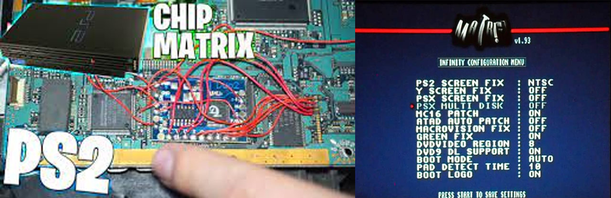

PS2 Chip Matrix v1.93
El modchip es utilizado para modificar o desactivar las restricciones y limitaciones impuestas por las empresas fabricantes de consolas de videojuegos más populares (PlayStation, etc).
Como desactivar el chip matiz
Matrix v1.93
Para iniciar El menú de Matrix v1.93 debemos encender nuestra consola de PS2 presionamos  +
+  .
.
Infinity configuration Menu
- PS2 SREEN FIX:
- Posee Salida NTSC / PAL60 / VGA / OFF / COLOR / PAL, Cuando compramos un juego en castellano, mayormente poseen un sistema PAL, el cual en nuestra Tv se vería en blanco y negro, gracias al menú configurable, podemos ver TODOS los juegos a color.
- OFF:No parchea nada de los juegos sea NTSC o PAL total mente apagado
- COLOR: forzar los juegos que salen a blanco y negro a correrlos a color
- PAL: forzar los juegos de NTSC por correrlos en PAL
- NTSC: forzar los juegos de PAL por correrlos en NTSC
- PAL60: corre juegos que tiene una resolución de 576i a 480i sin quitar el formato PAL
- VGA: salen a una resolución de 640*480p de video
- Y SCREEN FIX
- Esta opción nueve la salida de video de la pantalla (centrar en la pantalla) depende de la salida de video seleccionada
- OFF: no pache la pantalla
- AUTO: el mismo chip centra la pantalla
- +5,-5,+10,-10,+15,-15,+20,-20: mover manualmente estas opciones de la pantalla
- PSX SCREEN FIX
- Centra la pantalla del juego de PSX
- ON: detecta automáticamente la salida de video y lo centrara
- OFF: opción apagada
- PSX MULTI DISK
- Podemos leer juegos multi disco de PSX (varios juegos de PSX en un solo Disco)
- ON: opción encendida
- OFF: opción apagada
- MC16 PATCH
- Te permite utilizar memory card de 64 MB o más sin ayuda de ningún disco
- ON: opción encendida
- OFF: opción apagada
- ATAD AUTO PATCH
- Nos permite evitar errores en nuestro disco duro (HDD) utilizar cualquier disco duro cono su fuera el original de SONY
- ON: opción encendida
- OFF: opción apagada
- MACROVISION FIX
- Reproducir películas en nuestra PS2 (sin problemas en nuestros videos con protección MACROVISION) mantener en OFF para no tener problemas con algunas aplicaciones
- ON: opción encendida
- OFF: opción apagada
- GREEN FIX
- Nos permite ver películas en PS2 sin que se vea en verde
- ON: opción encendida
- OFF: opción apagada
- DVDVIDEO REGION
- Te permite poder ver cualquier zona sin importar de que parte del mundo sea.
- Región 1 - Canadá, Estados Unidos y territorios de EE.UU.
- Región 2 - Japón, Europa, Sur África, el Oriente Medio (incluyendo Egipto) y Groenlandia.
- Región 3 - Sudeste de Asia y Este de Asia (incluyendo Hong Kong).
- Región 4 - Australia, Nueva Zelanda, las Islas del Pacífico, América Central, México, Sudamérica y el Caribe.
- Región 5 - Europa del Este, Rusia, el subcontinente Indio, África, Corea del Norte y Mongolia
- Región 6 - China.
- Región 7 - Reservado para uso especial no especificado.
- Región 8 - Medios internacionales especiales para el transporte aéreo y oceánico.
- DVD9 DL SUPPORT
- Te permite utilizar discos doble capa de 9GB de capacidad
- ON: opción encendida
- OFF: opción apagada
- BOOT MODE
- Posee 5 modos de booteo (Fast, infman, Dev1, Dev2, AUTO Y Dvdv)
- AUTO: Permite corres de forma automática (a menos que presiones alguna tecla en espefico)
- FAST: Te permite ingresar a un juego automáticamente salteando la presentación de PS2
- *INFMAN: ingresa a un programa previamente instalado en la memory card
- *DEV1 y DEV2: Son utilizados para ejecutar programas en la memory card o un disco rígido
- *DVDV: Es el modo DVD video para ver películas
- PAD DETECT TIME
- Tiempo para conectar otro mando de PS2
- Entre las Opciones son (2, 4, 6, 8, 10)
- BOOT LOGO
- Como activar o desactivar el logo del chip matix
- ON: opción encendida
- OFF: opción apagada
×